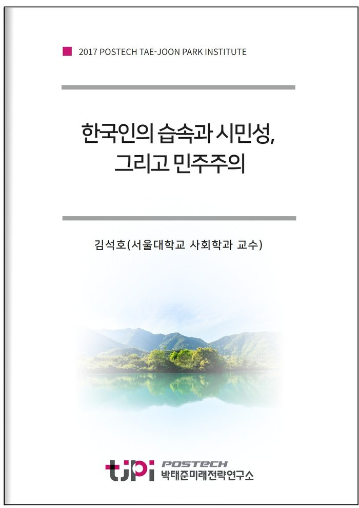

저자 김석호(서울대학교 사회학 교수)연재일 2017-11-30

요 약
이 연구는 한국인이 소유하고 있는 시민성의 수준과 내용을 평가하고 미래 민주주의를 위해 발전적으로 재구성한다는 목표를 달성하기 위해 다음과 같은 작업을 수행한다. 첫째, 그간 철학, 정치학, 사회학에서 진행된 시민성 논의를 살펴보고 한국적 맥락을 고려하여 이에 대한 개념적 정의를 시도한다. 둘째, 한국인의 시민사회 문화에서 존재하는 시민성의 맹아와 그 연원을 살펴본다. 그리고 한국인에게 시민사회와 시민성이란 무엇인지 따져보고 현재 시민성 결핍의 원인을 추적해본다. 셋째, 한국인의 시민성에 대한 이론적 및 역사적 접근 결과를 토대로 한국 시민사회의 구조적 조건과 한국인의 사회적 성격에 부합하는 시민성을 재구성한다. 넷째, 글로컬라이제이션의 일상화와 빠르게 변화하는 정치사회적 환경을 고려한 미래지향적 시민성에 대해 논의하고 한국사회에서 좋은 시민이란 어떤 것인가에 대한 연구이다.
목 차
1. 광장의 촛불과 시민성
2. 시민성 개념의 다의성
1) 시민성의 개념적 복합성
2) 시민성 개념의 핵심 요소들 - 시민성, 시민적 덕목, 시민권
3. 시민성과 민주주의
4. 한국인의 습속, 공동체와 합리적 개인, 그리고 시민성
5. 한국인의 시민성 수준에 대한 경험적 분석
6. 광장의 촛불 너머 시민성
참고문헌
내 용
[2017 연구논문] 한국인의 습속(習俗)과 시민성, 그리고 민주주의
김석호(서울대학교 사회학 교수)
연구내용은
미래전략연
구총서 9
촛불 너머의 시민사회와 민주주의] 에서 보실 수 있습니다.